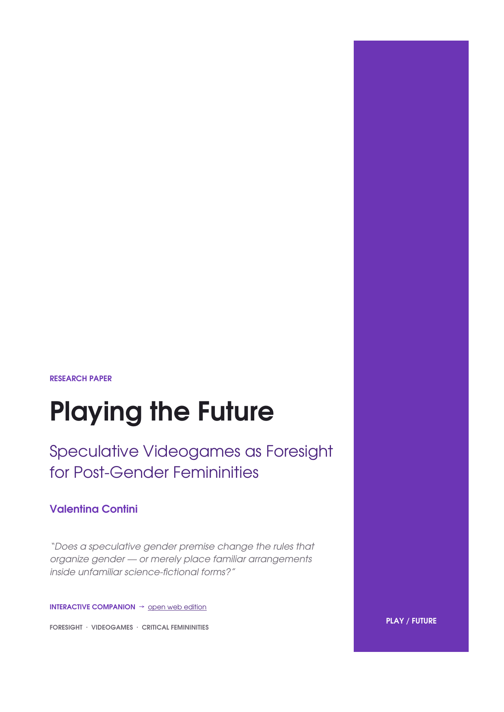

Playing the Future
Science fiction is very good at inventing new bodies. It is much less good at inventing new social rules.

Read the full paper.
The designed edition of Playing the Future: Speculative Videogames as Foresight for Post-Gender Femininities, including the Translation Test, the three game analyses and references.
The rabbit hole
Commercial videogames routinely ask millions of people to inhabit synthetic bodies, alien societies and configurable civilizations. That makes them interesting not only as stories, but as systems of rules that make some futures playable.
The paper asks whether speculative gender premises actually change the rules that organise gender — or whether familiar arrangements simply reappear inside unfamiliar science-fictional forms.
The Translation Test
The method examines novelty across six dimensions: ontology, embodiment, language, social role, systemic consequence and player agency.
The useful distinction is between changing the surface of a fictional world and changing the generative rules underneath it.
What emerged
Across the cases, biological imagination often travels further than social imagination. Synthetic bodies can abandon reproduction; alien species can exceed human binary categories; generated civilizations can remove gender labels. Yet familiar aesthetic, linguistic and institutional conventions often return.
That tension is exactly why games are interesting to foresight: they do not merely describe speculative worlds. They operationalise assumptions through rules, choices and consequences.
The PDF is the complete paper; the interactive companion is a separate web interpretation of the research.